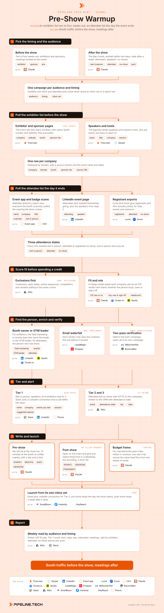

Pre-Show Warmup
Install the Pipeline.tech "Pre-Show Warmup" outbound play. Fetch https://raw.githubusercontent.com/pipeline-tech/plays/main/core/SKILL.md and https://raw.githubusercontent.com/pipeline-tech/plays/main/plays/pre-show-warmup/SKILL.md, save them as ~/.claude/skills/pipeline-outbound-core/SKILL.md and ~/.claude/skills/pipeline-pre-show-warmup/SKILL.md, then run /pipeline-pre-show-warmup.

Conference campaigns are among the best outbound campaigns you can run, because the ticket has already qualified the list and the calendar has fixed the timing. Before the show, the exhibitor list is public and every company on it has paid to be in one room on one date, so a meeting at the booth is an easy yes. After the show, the attendee list is warm for about a week, and the first useful email in that window wins.
Load pipeline-outbound-core first. Where a step says "apply core", follow that section of the core skill.
Inputs
Ask for these before step 1, and save them to ./pipeline-plays.config.json:
- The event: name, dates, city, site URL, and whether the user is exhibiting, speaking, attending, or selling the warmup to exhibitors.
- The ICP in one paragraph: industries, headcount band, geography, the problem you solve, who owns it. If the user has an ICP file, read it.
- Stack answers from core section 1, plus which attendee sources the user can reach: event app, badge scans, LinkedIn event page, Luma or Zoom export.
- The offer in one sentence and one proof point. If the warmup itself is the offer, the proof is a booth traffic number from a previous show.
Steps
1Pick the timing and the audience
- Confirm the window: exhibitors and sponsors two to four weeks out, attendees the day it ends. Most users run both.
- Decide what is being sold: the user's own offer with the show as the reason to meet, or the warmup itself sold to exhibitors by running their attendee list through this same pipeline.
- Each audience and timing gets its own campaign, inbox set and report line.
2Pull the exhibitor list before the show
- Crawl the exhibitor, sponsor and agenda pages with Firecrawl. Exhibitor pages carry name, booth and website; sponsor tier is a budget signal.
- Add speakers and session hosts: senior, certain to be there, and a session title is the easiest opener in outbound.
- Fill gaps with a Serper search or the event's LinkedIn page. Dedupe by domain, write a
sourcecolumn. Apply core: lists.
3Pull the attendee list the day it ends
- Pull the list the evening the event ends. Export the directory from the event app, add the badge scans, and have whoever worked the booth mark everyone they spoke to.
- Add LinkedIn event page attendees and any Luma or Zoom export from side events; Zoom shows who registered and who joined.
- Mark every row met in person, attended, or registered no-show; met in person wins any tie. This split drives tiering, copy and the report.
4Score fit before spending a credit
- Apply core: exclusions. Add one more: vendors selling to the same crowd are warmup prospects, never main-offer prospects.
- Enrich headcount, industry and location. A cheap model reads each website, gives a yes or no ICP verdict with one reason, and marks whether the person buys, uses or signs off.
- Drop the no's before any paid lookup. An attendee list looks warm, which is why it burns credits: a 4K badge list is often 600 real prospects.
5Find the person, enrich and verify
- For exhibitors, find the booth owner: a director or head of field marketing, events or trade shows, or the GTM leader under 200 people. If the warmup is the offer, that person is the buyer; otherwise pick the decision maker by company size and keep them as champion.
- For attendees, the person on the list is the contact. Confirm title on LinkedIn; badge data is often a job behind.
- Apply core: enrichment.
- Apply core: verification.
6Tier and alert
- Tier 1 is anyone met in person, plus every speaker and exhibitor that fits. Post a Slack card with name, company, where you met them or their session, LinkedIn URL and a one-line opener. The owner connects on LinkedIn and calls within two days.
- Tier 2 is attended, Tier 3 is registered no-show, both with ICP fit; both go to the two-step email in step 7 within two days.
- Write every account to the CRM with signal type
event, event name, attendance state, tier and date. Attendance state stays on the record as a scoring input for later plays.
7Write and launch
- Apply core: copy and send rules.
- Pre-show: you are both going to be there, so ask for 15 minutes at their booth or a coffee nearby, with a day and a time. For exhibitors buying the warmup, say plainly that you run their attendee list before the show.
- Post-show: open on the event and give one useful thing from it: a session takeaway, the recording, a short list of who was there in their segment. No-shows get the recording and a softer ask.
- Budget frame for manufacturers past a few million in revenue: flights, booth, hotel and a rep's week versus the same lead flow from a two-week campaign. Outbound sits next to the show, not instead of it.
- Draft three angle variants for email 1 and one threaded nudge for email 2 per audience; show the user before upload. Upload with
{EVENT},{BOOTH},{DAY},{SESSION},{TAKEAWAY}. - Pre-show sends stop the day the show opens; post-show sends stop a week after it ends. Stop any contact that replies, books or shows as an open deal.
8Report
- Weekly: pulled, ICP-fit rate, Tier 1 count, booth meetings, sent, reply rate, interested, meetings after. Split by audience (exhibitor, attendee, no-show) and timing (pre, post), and compare to the cold baseline.
- Apply core: credits and handoff.
Guardrails
- An attendee list is stale a week after the event ends. If it cannot be worked within two days, run it as a cold play with the event as a dated signal.
- Never open with "great to meet you", "hope you enjoyed the show" or a line about watching their booth. Every opener carries one useful thing from the event.
- Score fit before any paid lookup. A badge scan is attendance, not fit.
- Only work lists you collected yourself or the organizer gave you. A purchased attendee list is not this play.
- One person, one sequence. Someone who is both an exhibitor and an attendee is an exhibitor. Do not run this play and a cold play on the same domain in the same month.
Example run
User: "/pipeline-pre-show-warmup for our outbound agency, we are exhibiting at a 3-day building materials show in Dallas in three weeks, ICP is manufacturers 50 to 500 people in the US"
- Set both windows, confirmed EmailBison, HeyReach, Attio and Slack, captured offer and proof.
- Firecrawl pulled 412 exhibitors and 38 speakers; 388 companies after dedupe by domain.
- 171 passed the ICP read, 9 removed as customers, open deals or same-crowd vendors.
- 162 booth owners found, 118 with a GTM leader added as champion; 251 verified valid, 14 catch-all in their own campaign.
- 67 Tier 1 Slack cards (38 speakers, 29 sponsor-tier exhibitors), 11 booth meetings booked. 184 contacts loaded into "Pre-show, Dallas", stopped the morning the show opened.
- Show closed: 2,940 attendees from the app, 212 badge scans, 61 met in person. 644 passed the ICP read. 61 Tier 1 cards, 583 loaded into "Post-show, Dallas" within two days. Week one: 14 meetings after the show against 11 at the booth.